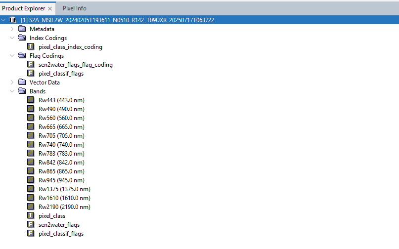

| Sen2Water - Generated output of Sen2Water | |
The processor generates NetCDF files as output. The output files are named according to the input file names but replacing the <Product Discriminator> with the processing time stamp:
Example:
| Input file | S2A_MSIL1C_20240104T103431_N0510_R108_T32UME_20240104T123149.SAFE |
| Output file | S2A_MSIL1C_20240104T103431_N0510_R108_T32UME_20250713T113100.nc |

The content of the generated NetCDF file is shown in the figure above. The Rw-bands contain the water leaving reflectances. The pixel-class band provides pixel classes with distinct values similar to Sen2Cor SCL. The sen2water_flags band provides a combination of flags which algorithm has been applied and whether an applied algorithm reports out-of-range values. The pixel_classif_flags holds the flags generated by the pixel identification tool IdePix.